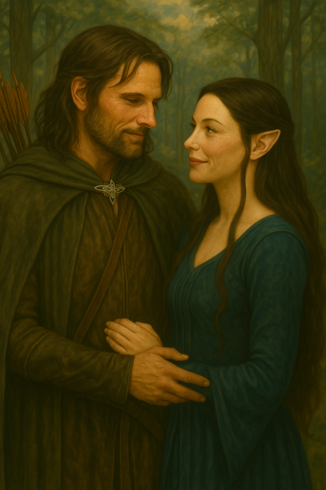
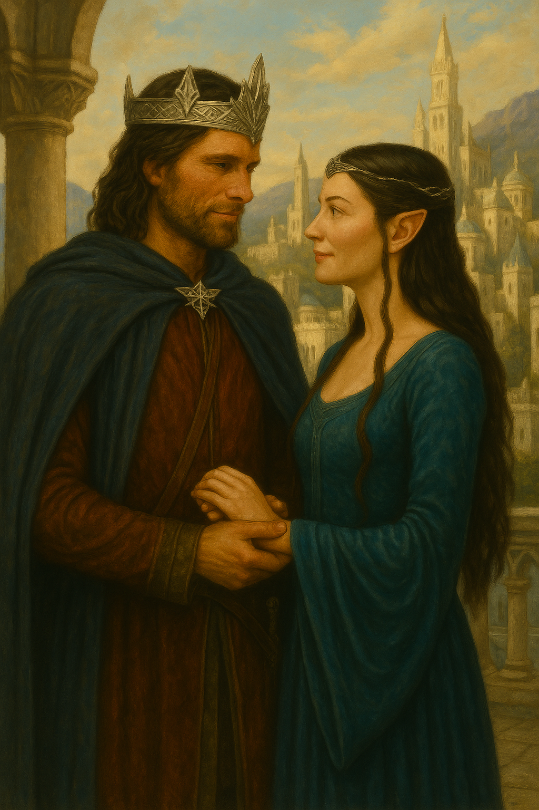

🌟 Linhagem e Legado
Aragorn, herdeiro de Isildur, viveu como guarda e guerreiro até cumprir seu destino como rei. Arwen, filha de Elrond, abriu mão da imortalidade por amor.
💘 Renúncia e Esperança
Seu amor enfrentou a sombra do tempo. Arwen escolheu uma vida mortal para viver ao lado de Aragorn, selando uma união entre mundos.
💬 Palavras Eternas
“Prefiro uma vida mortal ao teu lado do que todas as eras deste mundo sozinha.” — Arwen
“Tu és minha estrela no entardecer sombrio.” — Aragorn
📜 Linha do Tempo do Amor
- 💘 Encontro em Valfenda
- 🛡️ Batalhas contra Sauron
- 👑 Coroação como Rei de Gondor
- 🌠 Despedida em Lothlórien
🖼️ Momentos de um Amor Imortal



💌 Cartas para a Eternidade
“Mesmo que o entardecer me leve, tua luz permanece em mim.” — Aragorn
“Prefiro uma vida mortal ao teu lado do que todas as eras deste mundo sozinha.” — Arwen
🌌 Além do Trono
Governaram em paz por décadas. Arwen seguiu só após a morte de Aragorn, repousando em Lothlórien sob as estrelas — a mesma luz que os uniu.